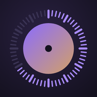

Orolon Player
Desenvolvido por Jo-ah · Developed by Jo-ah
Política de privacidade
Última atualização: 17 de novembro de 2026
Resumo: o Orolon Player não coleta, não envia e não compartilha nenhum dado seu. Tudo o que você coloca no app fica só no seu aparelho.
O que o app guarda, e onde
Para funcionar, o Orolon guarda no próprio aparelho, dentro do armazenamento do app:
- as músicas que você importa, com capas, letras e informações como título e artista;
- playlists, favoritas, fila, posição da música e estatísticas de escuta;
- o nome e a foto que você escolher para o seu perfil, se quiser colocar;
- temas e ajustes.
O Orolon não envia nada disso para lugar nenhum. Não existe conta, login, servidor ou nuvem do Orolon. Se o backup do próprio Android estiver ligado no seu aparelho, o sistema pode guardar os dados do app na sua conta Google, como faz com outros apps; isso é controlado por você nas configurações do Android.
O que o app não faz
- Não coleta dados pessoais nem dados de uso.
- Não envia nada pela internet. O app funciona sem conexão, e as letras e capas vêm só dos seus arquivos ou do que você mesmo digitar.
- Não tem anúncios, rastreadores, ferramentas de análise nem bibliotecas de terceiros que coletem dados.
- Não vende nem compartilha informações com ninguém.
Permissões do Android
- Acesso às músicas e aos áudios: com a sua permissão, o app lê a lista de arquivos de áudio do aparelho para montar a biblioteca e tocá-los, sem copiar nem enviar nada. Se preferir não dar essa permissão, dá para escolher os arquivos ou uma pasta pelo seletor do sistema.
- Notificação e reprodução em segundo plano: servem para a música continuar tocando com a tela desligada e para mostrar os controles na notificação e na tela de bloqueio.
- Manter o aparelho acordado: evita que a música pare enquanto toca.
- Internet: o app não pede a permissão de acesso à internet.
Backup
Se você usar "Salvar backup", o app cria um arquivo com suas playlists, estatísticas e ajustes e o entrega para você. Você decide onde guardar esse arquivo. O Orolon não tem acesso a ele depois. Com o "Enviar backup", quem envia o arquivo é o app que você escolher no compartilhamento do Android. Se você ligar o backup automático, o app grava cópias só na pasta que você escolher.
Como apagar seus dados
Você pode remover músicas e apagar as estatísticas dentro do app. Desinstalar o Orolon, ou limpar os dados dele nas configurações do Android, apaga tudo o que ele guardou. Os arquivos de backup que você salvou ou enviou continuam onde você os deixou.
Crianças
O app não coleta dados de ninguém, inclusive de crianças.
Mudanças nesta política
Se esta política mudar, a nova versão será publicada nesta página, com a data atualizada.
Contato
Dúvidas podem ser enviadas pelo e-mail de contato da página do app na Google Play, ou abrindo uma conversa em github.com/KiraraHoshi/compasso-player/issues. O código do app é aberto e pode ser conferido no mesmo endereço.
Privacy policy
Last updated: November 17, 2026
In short: Orolon Player does not collect, send or share any of your data. Everything you put in the app stays on your device.
What the app stores, and where
To work, Orolon stores on your device, inside the app's own storage:
- the music you import, with covers, lyrics and details such as title and artist;
- playlists, favorites, queue, playback position and listening stats;
- the name and picture you choose for your profile, if you add them;
- themes and settings.
Orolon does not send any of this anywhere. Orolon has no account, sign-in, server or cloud. If Android's own backup is turned on in your device, the system may keep the app's data in your Google account, as it does for other apps; you control that in Android settings.
What the app does not do
- It does not collect personal data or usage data.
- It does not send anything over the internet. The app works offline, and lyrics and covers come only from your own files or from what you type yourself.
- It has no ads, trackers, analytics or third-party libraries that collect data.
- It does not sell or share information with anyone.
Android permissions
- Access to music and audio: with your permission, the app reads the list of audio files on the device to build the library and play them, without copying or sending anything. If you prefer not to grant it, you can pick files or a folder in the system file picker.
- Notification and background playback: keep music playing with the screen off and show the controls in the notification and on the lock screen.
- Keep the device awake: prevents playback from stopping while music is playing.
- Internet: the app does not request the internet access permission.
Backup
If you use "Save backup", the app creates a file with your playlists, stats and settings and hands it to you. You decide where to keep it. Orolon has no access to it afterwards. With "Send backup", the file is sent by the app you pick in Android's share sheet. If you turn on automatic backup, the app writes copies only to the folder you choose.
How to delete your data
You can remove songs and clear your stats inside the app. Uninstalling Orolon, or clearing its data in Android settings, deletes everything it stored. Backup files you saved or sent stay wherever you left them.
Children
The app does not collect data from anyone, including children.
Changes to this policy
If this policy changes, the new version will be published on this page with an updated date.
Contact
Questions can be sent to the contact email on the app's Google Play page, or by opening an issue at github.com/KiraraHoshi/compasso-player/issues. The app's source code is open and available at the same address.